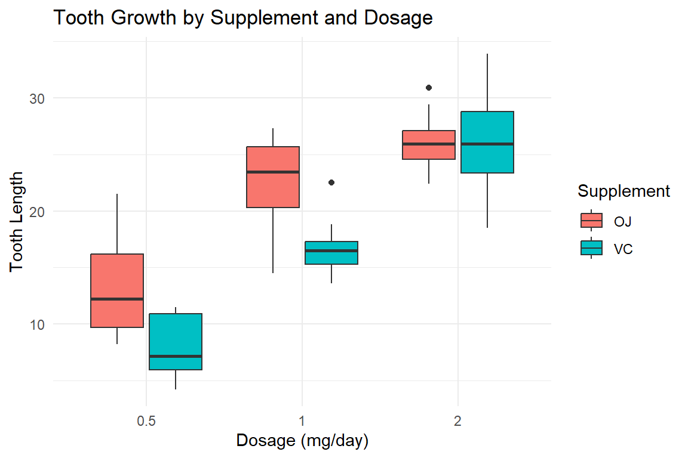
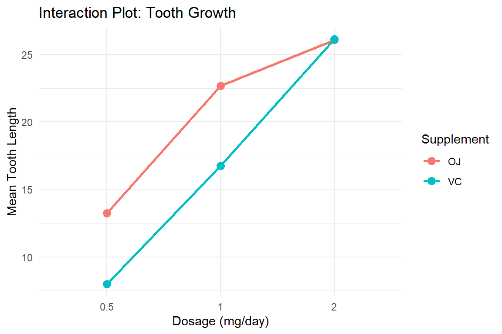
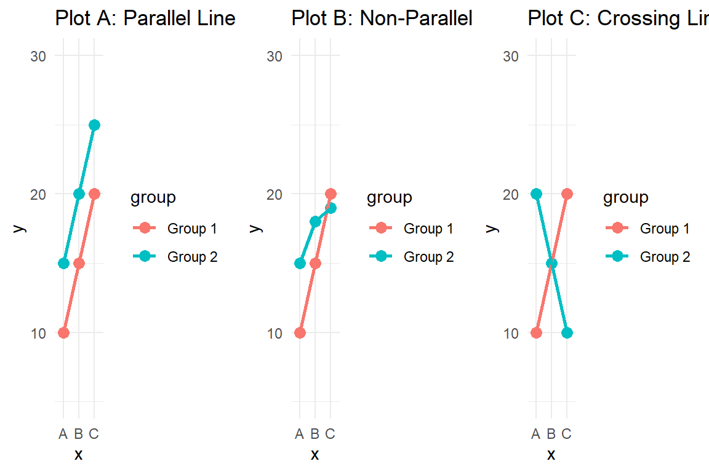
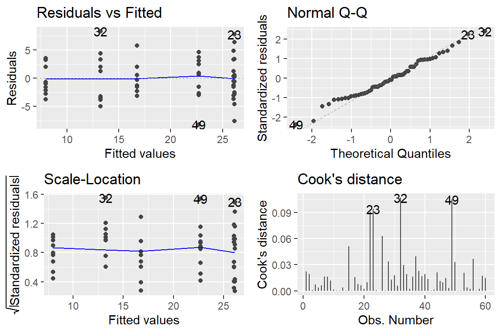
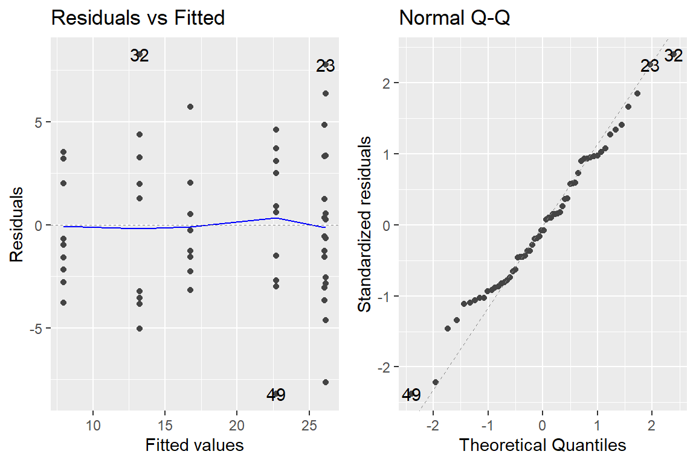
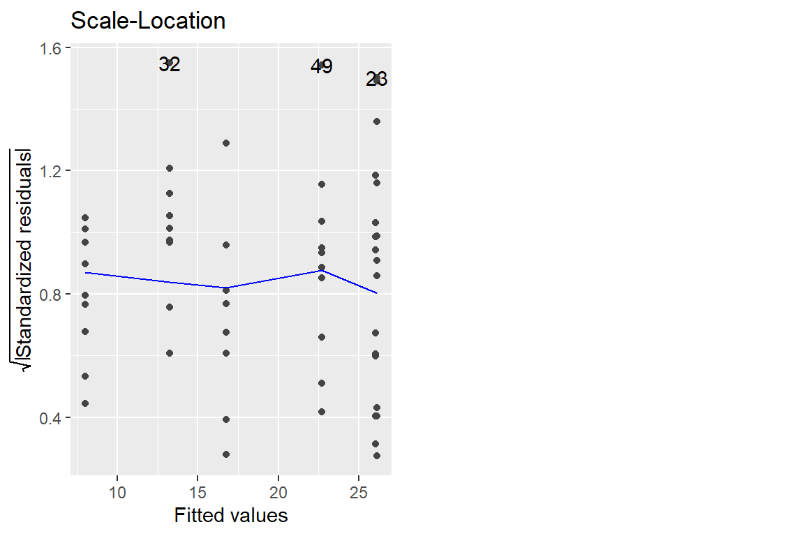
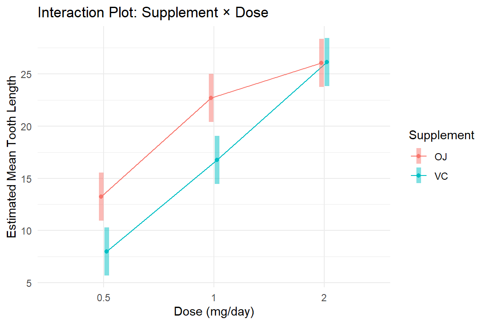
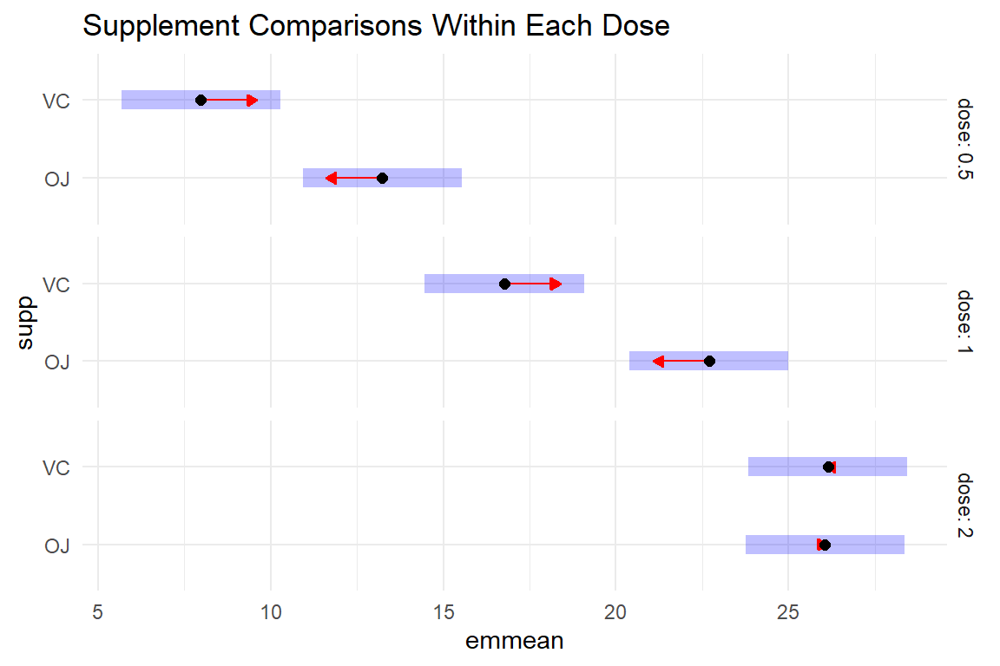

Welcome
Introduction
Welcome to this tutorial on two-way and factorial ANOVA! Last week, you learned how to compare means across multiple groups using one-way ANOVA. This week, we’re taking it to the next level by examining how two or more categorical variables simultaneously affect a response variable.
This is where things get really interesting! We’ll explore:
- How different factors interact with each other
- What happens when effects aren’t simply additive
- How to properly model and interpret complex relationships
Real-world phenomena rarely involve just one factor. For example:
- Does a new teaching method work equally well for all class sizes?
- Do medication effects differ by dosage and delivery method?
- Does the relationship between study time and test performance depend on prior knowledge?
Two-way ANOVA lets us answer these questions!
Learning Objectives
By the end of this tutorial, you will be able to:
- Distinguish between main effects and interaction effects and explain what each represents in experimental designs
- Understand the principle of marginality in the context of choosing between Type II and Type III sums of squares
- Explain the three types of sums of squares (Type I, II, and III) and when to use each in factorial experiments
- Fit factorial ANOVA models in R always including the full model with all interactions
- Interpret ANOVA results at different levels (main effects, interactions) using appropriate sums of squares
- Assess model fit using diagnostic plots from
ggfortify::autoplot() - Conduct post-hoc comparisons using
emmeanswith different strategies based on research questions - Use emmeans to examine marginal means for main effects even when interactions are present in the model
- Visualize and communicate complex factorial experimental results
Let’s dive in!
From One-Way to Two-Way ANOVA
Review: One-Way ANOVA
Last week, you learned that one-way ANOVA tests whether a single categorical variable (factor) affects a continuous response variable.
Example: Does vocabulary score differ by social class?
- One factor: Social class (4 levels: lower, working, middle, upper)
- Response: Vocabulary score
- Question: Do the group means differ?
Model: \(y_{ij} = \mu + \alpha_i + \epsilon_{ij}\)
Where:
- \(\mu\) = overall mean
- \(\alpha_i\) = effect of group \(i\)
- \(\epsilon_{ij}\) = random error
The Limitation of One-Way ANOVA
Real-world problems often involve multiple factors acting simultaneously:
Research scenarios:
- Education: Does test performance depend on both teaching method and class size?
- Medicine: Do treatment effects vary by both dosage and patient age group?
- Business: Does sales performance depend on both region and product type?
- Agriculture: Does crop yield depend on both fertilizer type and irrigation method?
Why not just do separate one-way ANOVAs?
If we analyzed teaching method and class size separately: - We’d miss potential interactions (the effect of teaching method might differ by class size!) - We’d lose statistical power - We couldn’t make proper statistical adjustments - We couldn’t answer the most interesting questions!
What is Two-Way ANOVA?
Two-way ANOVA analyzes the effects of two categorical factors on a continuous response variable simultaneously.
Components:
- Factor A Main Effect: Does factor A affect the response (averaging over levels of factor B)?
- Factor B Main Effect: Does factor B affect the response (averaging over levels of factor A)?
- Interaction Effect: Does the effect of factor A depend on the level of factor B (or vice versa)?
Example: Tooth Growth Study
Let’s use a classic dataset studying tooth growth in guinea pigs:
- Response variable: Tooth length
(
len) - Factor 1: Supplement type (
supp): Orange Juice (OJ) vs. Ascorbic Acid (VC) - Factor 2: Dosage (
dose): 0.5, 1.0, or 2.0 mg/day
Research questions:
- Does supplement type affect tooth growth? (Main effect of supplement)
- Does dosage affect tooth growth? (Main effect of dosage)
- Does the effect of supplement depend on dosage? (Interaction)
Let’s explore this dataset!
Exploring the Tooth Growth Data
First, let’s look at the data structure:
# View the first few rows
head(tooth)# Check the structure
str(tooth)## 'data.frame': 60 obs. of 3 variables:
## $ len : num 4.2 11.5 7.3 5.8 6.4 10 11.2 11.2 5.2 7 ...
## $ supp: Factor w/ 2 levels "OJ","VC": 2 2 2 2 2 2 2 2 2 2 ...
## $ dose: Factor w/ 3 levels "0.5","1","2": 1 1 1 1 1 1 1 1 1 1 ...# Sample sizes
tooth |>
count(supp, dose)We have a balanced design: Each combination of supplement and dose has 10 observations.
Balanced designs are ideal because:
- Statistical tests are more robust
- Different types of sums of squares give the same results
- Interpretation is simpler
Visualizing Two Factors
With two factors, we need visualizations that show both simultaneously. Let’s try several approaches:
Approach 1: Boxplots with faceting
ggplot(tooth, aes(x = dose, y = len, fill = supp)) +
geom_boxplot() +
labs(x = "Dosage (mg/day)",
y = "Tooth Length",
fill = "Supplement",
title = "Tooth Growth by Supplement and Dosage") +
theme_minimal()
Approach 2: Interaction plot (mean lines)
# Calculate means for each combination
tooth_means <- tooth |>
group_by(supp, dose) |>
summarize(mean_len = mean(len), .groups = "drop")
# Plot with connecting lines
ggplot(tooth_means, aes(x = dose, y = mean_len,
color = supp, group = supp)) +
geom_point(size = 3) +
geom_line(linewidth = 1) +
labs(x = "Dosage (mg/day)",
y = "Mean Tooth Length",
color = "Supplement",
title = "Interaction Plot: Tooth Growth") +
theme_minimal()
What do you notice?
- At low dosages (0.5 mg), OJ appears more effective than VC
- At high dosages (2.0 mg), the supplements appear similar
- The lines are not parallel - this suggests an interaction!
Understanding Interactions Visually
An interaction occurs when the effect of one factor depends on the level of another factor.
Visual signatures of interaction:
- Parallel lines → No interaction (effects are additive)
- Non-parallel lines → Interaction present (effects are not simply additive)
- Crossing lines → Strong interaction (effect reverses!)
Let’s see some examples with quiz questions:

Your Turn: Create Interaction Plots
Let’s practice creating interaction plots with different data.
We have simulated data on student test scores with two factors:
- Teaching method: Lecture vs. Active Learning
- Class size: Small vs. Large
Your task:
- Calculate mean test scores for each combination of teaching method and class size
- Create an interaction plot showing how teaching method effects vary by class size
# Calculate means
learning_means <- learning_data |>
group_by(___, ___) |>
summarize(mean_score = mean(___), .groups = "drop")
# Create interaction plot
ggplot(learning_means,
aes(x = ___, y = ___,
color = ___, group = ___)) +
geom_point(size = 3) +
geom_line(linewidth = 1) +
labs(x = "Class Size",
y = "Mean Test Score",
color = "Teaching Method",
title = "Interaction Plot: Test Scores") +
theme_minimal()# Hints:
# - Group by both teaching_method and class_size
# - Calculate mean of test_score
# - For the plot:
# - x-axis: one of the factors (try class_size)
# - y-axis: mean_score
# - color AND group: the other factor (teaching_method)# Calculate means
learning_means <- learning_data |>
group_by(teaching_method, class_size) |>
summarize(mean_score = mean(test_score), .groups = "drop")
# Create interaction plot
ggplot(learning_means,
aes(x = class_size, y = mean_score,
color = teaching_method, group = teaching_method)) +
geom_point(size = 3) +
geom_line(linewidth = 1) +
labs(x = "Class Size",
y = "Mean Test Score",
color = "Teaching Method",
title = "Interaction Plot: Test Scores") +
theme_minimal()Interpreting Your Plot
Look at the interaction plot you just created.
Questions to consider:
- Are the lines parallel or non-parallel?
- Does the benefit of Active Learning over Lecture appear to be the same for both class sizes?
- If there’s an interaction, how would you describe it?
Hint: Look at the vertical distance between the lines. Does it change from Small to Large class size?
Main Effects and Interaction Effects
The Two-Way ANOVA Model
The statistical model for two-way ANOVA is:
\[y_{ijk} = \mu + \alpha_i + \beta_j + (\alpha\beta)_{ij} + \epsilon_{ijk}\]
Where:
- \(y_{ijk}\) = the \(k\)-th observation in group \(i\) of factor A and group \(j\) of factor B
- \(\mu\) = overall (grand) mean
- \(\alpha_i\) = main effect of factor A at level \(i\)
- \(\beta_j\) = main effect of factor B at level \(j\)
- \((\alpha\beta)_{ij}\) = interaction effect between factor A (level \(i\)) and factor B (level \(j\))
- \(\epsilon_{ijk}\) = random error term
Main Effects Explained
A main effect is the effect of one factor averaged across all levels of the other factor(s).
Main effect of factor A: The average difference in response across levels of A, ignoring (averaging over) factor B.
Main effect of factor B: The average difference in response across levels of B, ignoring (averaging over) factor A.
Example with tooth growth:
- Main effect of supplement: On average across all dosages, does OJ differ from VC?
- Main effect of dosage: On average across both supplements, do different dosages produce different growth?
Important: Main effects can be misleading when there’s a significant interaction! We’ll explore why soon.
Interaction Effects Explained
An interaction effect occurs when the effect of one factor depends on the level of another factor.
Equivalent ways to think about it:
- The effect of factor A is different at different levels of factor B
- The effect of factor B is different at different levels of factor A
- The factors work together in a non-additive way
Types of interactions:
- No interaction (parallel lines): Effects are purely
additive
- Example: Drug effect is +10 points for everyone, regardless of age group
- Ordinal interaction (non-parallel but
non-crossing): Effects differ in magnitude but not direction
- Example: Drug effect is +15 points for young adults but +8 points for older adults
- Disordinal interaction (crossing lines): Effects
differ in direction
- Example: Drug effect is +10 points for young adults but -5 points for older adults
Why interactions matter:
When an interaction is present, you should be extremely careful (if ever) interpreting main effects alone! You should consider the factors together.
Example: If we found “no main effect of supplement” but a significant interaction, it means:
- On average across all doses, OJ and VC might be similar
- BUT at specific doses, one might be much better than the other!
Additive vs. Interactive Models
Two-way ANOVA can be fit in two ways:
1. Additive Model (no interaction):
\[y_{ijk} = \mu + \alpha_i + \beta_j + \epsilon_{ijk}\]
In R:
lm(response ~ factorA + factorB)
Interpretation: The effects of factor A and factor B are simply added together. Factor A has the same effect regardless of factor B level.
2. Interactive Model (with interaction):
\[y_{ijk} = \mu + \alpha_i + \beta_j + (\alpha\beta)_{ij} + \epsilon_{ijk}\]
In R:
lm(response ~ factorA + factorB + factorA:factorB) or
lm(response ~ factorA * factorB)
Note: factorA * factorB is shorthand
for factorA + factorB + factorA:factorB
Interpretation: The effects of factor A and factor B combine in a non-additive way. The effect of factor A depends on the level of factor B.
Hypotheses for Two-Way ANOVA
For the interactive model, we test three hypotheses:
1. Main effect of factor A:
- \(H_0\): All levels of factor A have the same mean (averaging over factor B)
- \(H_A\): At least one level of factor A differs
2. Main effect of factor B:
- \(H_0\): All levels of factor B have the same mean (averaging over factor A)
- \(H_A\): At least one level of factor B differs
3. Interaction between A and B:
- \(H_0\): The effect of factor A is the same at all levels of factor B (no interaction)
- \(H_A\): The effect of factor A differs across levels of factor B (interaction present)
Testing strategy:
- Test the interaction first
- If interaction is significant → focus on the interaction, be cautious with main effects
- If interaction is not significant → interpret main effects
Fitting Two-Way ANOVA in R
Let’s fit both models to the tooth growth data:
Model 1: Additive (no interaction)
# Additive model
tooth_add <- lm(len ~ supp + dose, data = tooth)
# ANOVA table
anova(tooth_add)Model 2: Interactive (with interaction)
# Interactive model (two equivalent ways)
tooth_int <- lm(len ~ supp + dose + supp:dose, data = tooth)
# OR equivalently:
tooth_int <- lm(len ~ supp * dose, data = tooth)
# ANOVA table
anova(tooth_int)Comparing the outputs:
Notice the interaction model has an extra row:
supp:dose. This tests whether the interaction is
significant.
Reading the ANOVA table:
- supp: F-statistic and p-value for main effect of supplement
- dose: F-statistic and p-value for main effect of dose
- supp:dose: F-statistic and p-value for the interaction
- Each row tests whether that term significantly improves the model
Quiz: Interpreting ANOVA Output
Look at the ANOVA table for the interactive model above.
Your Turn: Fit a Two-Way ANOVA
Now it’s your turn! Use the learning data (teaching method and class size).
Your task:
- Fit an interactive two-way ANOVA model predicting test_score from teaching_method and class_size
- Use the
*notation to include both main effects and the interaction - View the ANOVA table using
anova() - Determine which effects are significant at α = 0.05
# Fit interactive model
learning_model <- lm(___ ~ ___ * ___, data = learning_data)
# View ANOVA table
anova(___)# Hints:
# - Response variable: test_score
# - Factor 1: teaching_method
# - Factor 2: class_size
# - Use * to include main effects and interaction
# - Call anova() on the fitted model# Fit interactive model
learning_model <- lm(test_score ~ teaching_method * class_size,
data = learning_data)
# View ANOVA table
anova(learning_model)
# For a cleaner table:
anova(learning_model) |> tidy()Interpretation Practice
After fitting your model, answer these questions:
- Is the interaction significant? (Look at the p-value for teaching_method:class_size)
- Are the main effects significant?
- What should you focus on in interpretation?
- If interaction is significant → focus on the interaction
- If interaction is not significant → focus on main effects
Take a moment to write out your interpretation before moving on!
The Principle of Marginality and Sums of Squares
The Hierarchical Principle in Factorial Designs
In factorial experimental designs, we always fit the full model including all interactions. This is a fundamental principle called the hierarchical principle or principle of marginality:
If you include an interaction term in your model, you MUST include all lower-order terms (main effects) that make up the interaction.
In other words:
- If you fit A×B, you must include A and B
- If you fit A×B×C, you must include A, B, C, A×B, A×C, and B×C
This is not optional! It’s a mathematical and statistical necessity for proper model specification.
Why We Always Fit the Full Model
In experimental design, we take a different approach than exploratory model building:
Experimental Design Perspective:
- Design determines the model: The factorial design you chose determines the model you fit
- Test all effects: We want to test all main effects and interactions
- Keep the full model: We don’t remove terms based on significance
- Different questions, different tests: We adjust our analysis strategy based on results, not the model itself
Contrast with model building:
- Model building: Start complex, remove non-significant terms
- Experimental design: Fit the designed model, interpret appropriately
Example:
You designed an experiment with factors A and B. You always fit:
# Full factorial model - this is your experimental design
model <- lm(response ~ A * B) # Includes A, B, and A×BYou do NOT remove terms even if they’re non-significant. Instead, you adjust your interpretation and post-hoc testing strategy.
The Critical Question: Type II vs. Type III Sums of Squares
While we always keep the full model with interactions, a critical question arises: How should we test main effects?
This is where the principle of marginality becomes crucial for choosing between Type II and Type III sums of squares.
The fundamental issue: When testing a main effect in the presence of an interaction term in the model, what hypothesis are we actually testing?
Type II Sums of Squares: Respecting Marginality
Type II approach:
- Tests main effect of A controlling for B (but NOT controlling for A×B)
- Tests main effect of B controlling for A (but NOT controlling for A×B)
- Respects the principle of marginality
- Assumes that if the interaction is negligible, we shouldn’t adjust for it when testing main effects
Why it respects marginality:
Type II compares these models:
- For testing A:
lm(~ B)vs.lm(~ A + B) - For testing B:
lm(~ A)vs.lm(~ A + B) - For testing A×B:
lm(~ A + B)vs.lm(~ A + B + A:B)
Notice that we never test a main effect in the presence of its interaction. We only include the interaction when testing the interaction itself. This follows the hierarchical principle.
Model comparison notation:
- Main effect A: SS(A | B) - “A given B, not given A×B”
- Main effect B: SS(B | A) - “B given A, not given A×B”
- Interaction: SS(AB | A, B) - “A×B given both main effects”
Type III Sums of Squares: Violating Marginality
Type III approach:
- Tests main effect of A controlling for B AND A×B
- Tests main effect of B controlling for A AND A×B
- Violates the principle of marginality
- Tests “marginal” effects (averaged across the other factor) even when an interaction is present
Why it violates marginality:
Type III compares these models:
- For testing A:
lm(~ B + A:B)vs.lm(~ A + B + A:B) - For testing B:
lm(~ A + A:B)vs.lm(~ A + B + A:B)
These model comparisons are not hierarchical! The reduced model includes the interaction A×B but is missing the main effect being tested. This violates the principle that you cannot have an interaction in a model without its corresponding main effects.
Model comparison notation:
- Main effect A: SS(A | B, AB) - “A given B AND A×B” (Warning!)
- Main effect B: SS(B | A, AB) - “B given A AND A×B” (Warning!)
- Interaction: SS(AB | A, B) - “A×B given both main effects”
The Controversy: Criticisms of Type III
Many prominent statisticians have strongly criticized Type III sums of squares precisely because they violate marginality:
John Nelder and Peter Lane (1995):
“Neglect of marginality relations leads to the introduction of hypotheses that, although well defined mathematically, are, we assert, of no inferential interest.”
Stephen Senn (1998, 2000):
Senn argued that Type III leads to paradoxes. For example, in multi-center trials:
“Given two centres, a large and a small centre, unless the small centre is at least one-third the size of the large centre, the type III treatment estimate will have a larger variance than that based on the large centre alone. Thus more information is worse than less.”
Øyvind Langsrud (2003):
In his influential paper “ANOVA for unbalanced data: Use Type II instead of Type III sums of squares,” Langsrud argues:
“Type III analysis is founded on unrealistic models—models with interactions, but without all corresponding main effects.”
The core argument:
If an interaction A×B is in the model, it makes no sense to ask “what is the main effect of A, adjusting for the interaction?” The interaction already tells us that the effect of A depends on B. The concept of a single “main effect” adjusted for an interaction that involves that very effect is philosophically questionable.
When Type III Might Still Be Used
Despite these criticisms, Type III is common in some fields, particularly because:
- SAS and SPSS default: These packages use Type III by default, so it’s familiar to many researchers
- Marginal means interpretation: Some argue that Type III tests whether the marginal means (averaged across the other factor) differ, which can be a valid question
- Consistency: Results are the same regardless of factor coding (with proper contrasts)
However: Just because Type III tests are “valid” mathematically doesn’t mean they test hypotheses of interest. When an interaction is present, marginal main effects are often not meaningful.
Our Recommendation: Use Type II as the Default
For this course, we strongly recommend Type II sums of squares as your default approach:
Reasons to prefer Type II:
- Respects the principle of marginality - tests are theoretically sound
- More powerful when interaction is absent or negligible
- Philosophically coherent - doesn’t test odd hypotheses
- Endorsed by prominent statisticians (Nelder, Senn, Langsrud, Fox)
- Default in the R community via the
carpackage - Natural interpretation - tests main effects controlling for other main effects
How Type II works in practice:
When the interaction is not significant:
- Type II gives powerful tests of main effects
- Main effects are interpretable (factors act independently)
- This is exactly what we want!
When the interaction IS significant:
- Type II tells us the main effects aren’t significant after controlling for other main effects
- But this doesn’t matter. We should focus on simple effects anyway!
- The fact that Type II “assumes no interaction” just means it gives us less information about marginal means (which we don’t care about with a significant interaction)
When You Might Use Type III
Limited scenarios where Type III could be appropriate:
- Replicating published analyses that used Type III (for comparison)
- Regulatory requirements (some agencies require Type III)
- Theoretical interest in marginal means even with interactions present
- Very large sample sizes where power isn’t a concern
But even in these cases: Be aware you’re testing hypotheses that violate marginality and may not be of scientific interest.
Practical Implications: What Changes?
Important: The difference between Type II and Type III is only in testing main effects. The interaction test is identical!
Type II strategy:
- Fit full model:
model <- lm(response ~ A * B) - Get Type II tests:
car::Anova(model, type = 2) - If interaction is significant → focus on simple effects (emmeans
with
|) - If interaction is not significant → interpret main effects (they’re powerful and meaningful!)
Type III strategy:
- Fit full model:
model <- lm(response ~ A * B, contrasts=list(A=contr.sum, B=contr.sum)) - Get Type III tests:
car::Anova(model, type = 3) - If interaction is significant → focus on simple effects (but you also tested marginal main effects)
- If interaction is not significant → interpret main effects (less powerful than Type II)
Understanding the Difference with an Example
Let’s see how Type II and Type III differ with our tooth growth data:
# Fit the full model
tooth_model <- lm(len ~ supp * dose, data = tooth)
# Type II: Respects marginality
cat("=== Type II SS (Recommended Default) ===\n")## === Type II SS (Recommended Default) ===car::Anova(tooth_model, type = "II")# Type III: Violates marginality
cat("\n=== Type III SS (For Comparison) ===\n")##
## === Type III SS (For Comparison) ===options(contrasts = c("contr.sum", "contr.poly"))
tooth_model_t3 <- lm(len ~ supp * dose, data = tooth)
car::Anova(tooth_model_t3, type = "III")Notice:
- The interaction test is identical (p = 0.0218 in both)
- The main effects can differ slightly (but don’t in this case due to balance)
- With balanced data like this, they’re similar, but with unbalanced data, differences can be substantial
Interpretation with Type II (recommended):
- Since the interaction is significant (p = 0.02), we focus on simple effects
- The Type II main effects test whether there are main effects assuming no interaction
- But we found an interaction, so main effects alone aren’t the whole story
- We should use emmeans to examine simple effects (supplement within each dose)
Interpretation with Type III (if you used it):
- The interaction is significant (p = 0.02), so we focus on simple effects
- The Type III main effects test marginal means in the presence of the interaction
- These marginal tests are mathematically valid but violate marginality
- We should use emmeans to examine simple effects regardless
Quiz: Understanding Marginality and SS Types
Recommendation Summary
Our recommended workflow for factorial ANOVA:
# Step 1: Fit the full model (based on your experimental design)
full_model <- lm(response ~ factorA * factorB, data = mydata)
# Step 2: Get Type II tests (respects marginality)
library(car)
Anova(full_model, type = 2)
# Step 3: Check diagnostics
library(ggfortify)
autoplot(full_model, which = 1:4, ncol = 2)
# Step 4: Post-hoc testing based on results
# - Interaction significant → emmeans with simple effects (pairwise ~ A | B)
# - Interaction not significant → emmeans with marginal means (~ A and ~ B separately)Why we prefer Type II:
- Respects the principle of marginality (theoretically sound)
- More powerful when interactions are negligible (practical advantage)
- Endorsed by the R statistical community and leading statisticians
- Natural interpretation aligns with experimental design principles
When to consider Type III:
- Replicating published work that used Type III
- Required by regulatory bodies
- Direct interest in marginal means (but be aware of the marginality violation)
The Bottom Line
Remember: The model stays the same (full factorial) regardless of which SS type you use. The difference is only in which hypotheses you test for the main effects:
- Type II: Tests main effects assuming hierarchical relationships (respects marginality)
- Type III: Tests marginal main effects even in presence of interactions (violates marginality)
For most experimental designs, Type II is often the better choice because it: 1. Follows sound statistical principles 2. Provides more powerful tests when appropriate 3. Doesn’t test hypotheses that violate the structure of the model
The key is understanding what hypothesis each type tests, and choosing the one that matches your research question!
Model Diagnostics
Why Check Model Assumptions?
Before trusting your ANOVA results, you must verify that the model assumptions are reasonably satisfied.
The assumptions (same as one-way ANOVA, but extended):
- Independence: Observations are independent within and across groups
- Normality: Residuals are approximately normally distributed
- Equal variance (homoscedasticity): Variance is constant across all factor combinations
- No influential outliers: No observations are unduly influencing the results
Why this matters:
- Violations can lead to incorrect p-values
- Violations can make confidence intervals unreliable
- Some violations are more serious than others
- Knowing which assumptions are violated helps you choose fixes
Using ggfortify::autoplot()
The ggfortify package provides an easy way to create
diagnostic plots for linear models (including ANOVA).
Basic syntax:
autoplot(model)This produces four diagnostic plots in a 2×2 grid:
- Residuals vs. Fitted (checks linearity and equal variance)
- Normal Q-Q (checks normality of residuals)
- Scale-Location (checks equal variance)
- Residuals vs. Leverage (identifies influential points)
Let’s examine each plot for our tooth growth model:
# Create diagnostic plots
autoplot(tooth_int, which = 1:4, ncol = 2, nrow = 2)
Plot 1: Residuals vs. Fitted
What it shows: Residuals (vertical axis) plotted against fitted values (horizontal axis)
What to look for:
- Good: Points randomly scattered around horizontal line at 0
- Good: No clear pattern or trend
- Good: Roughly equal spread across the range
Red flags:
- Curved pattern → Nonlinearity (may need transformation)
- Funnel shape → Heteroscedasticity (unequal variance)
- Clusters or gaps → Missing factor or interaction
For our tooth growth model:
The points are fairly randomly scattered with no obvious pattern. There might be slight differences in spread, but nothing alarming.
Plot 2: Normal Q-Q Plot
What it shows: Quantile-quantile plot comparing residual distribution to theoretical normal distribution
What to look for:
- Good: Points fall close to the diagonal line
- Good: Slight deviations at extremes are okay
Red flags:
- Points deviate substantially from line → Non-normality
- S-shaped curve → Skewed distribution
- Points far from line at both ends → Heavy tails (outliers)
For our tooth growth model:
Points follow the line quite well with minor deviations at the ends. This is acceptable, especially with moderate sample sizes.
Remember: ANOVA is fairly robust to minor violations of normality, especially with: - Balanced designs - Moderate to large sample sizes (n > 30 per group)
Plot 3: Scale-Location (Spread-Location)
What it shows: Square root of standardized residuals vs. fitted values
What to look for:
- Good: Horizontal red line (roughly flat)
- Good: Points equally spread across range
Red flags:
- Rising or falling red line → Heteroscedasticity
- Funnel or cone shape → Variance increases with fitted values
Why standardized residuals?
Standardization accounts for the fact that residuals naturally have different variances at different fitted values. Standardized residuals should have constant variance.
For our tooth growth model:
The red line is relatively flat and the spread is fairly consistent. No serious heteroscedasticity detected.
Plot 4: Residuals vs. Leverage
What it shows: Identifies influential observations using Cook’s distance
What to look for:
- Good: Points clustered together with low leverage and low residuals
- Check: Points with high leverage (far right) or large residuals (far from 0)
Key concepts:
- Leverage: How far an observation’s predictor values are from average
- Cook’s Distance: Measures how much the model changes if that point is removed
- Influential points: High leverage AND large residual (outside dashed lines if shown)
For our tooth growth model:
No points show particularly high Cook’s distance. All observations appear reasonable.
What if you find influential points?
- Check for data entry errors
- Investigate whether the point is valid
- Run analysis with and without the point
- Report sensitivity analysis if results change substantially
Customizing Diagnostic Plots
You can select specific plots using the which
argument:
# Show only Q-Q plot and Residuals vs Fitted
autoplot(tooth_int, which = c(1, 2), ncol = 2)
# Show only Scale-Location
autoplot(tooth_int, which = 3)
Your Turn: Model Diagnostics
Now check the diagnostics for the learning data model you fit earlier.
Your task:
- Fit the interactive model (if you haven’t already)
- Create diagnostic plots using
autoplot() - Assess each assumption:
- Are residuals randomly scattered? (Plot 1)
- Do points follow the Q-Q line? (Plot 2)
- Is variance roughly constant? (Plot 3)
- Are there influential points? (Plot 4)
# Fit the model
learning_model <- lm(test_score ~ teaching_method * class_size,
data = learning_data)
# Create diagnostic plots
autoplot(___, which = ___, ncol = 2, nrow = 2)# Hints:
# - Use autoplot() on learning_model
# - which = 1:4 shows all four plots
# - ncol = 2, nrow = 2 arranges them in a 2×2 grid# Fit the model
learning_model <- lm(test_score ~ teaching_method * class_size,
data = learning_data)
# Create diagnostic plots
autoplot(learning_model, which = 1:4, ncol = 2, nrow = 2)
# Alternative: show just normality and equal variance
autoplot(learning_model, which = c(2, 3), ncol = 2)Interpreting Your Diagnostics
After examining your plots, answer these questions:
- Normality: Do the residuals appear approximately normal?
- Equal variance: Is the variance roughly constant across groups?
- Outliers: Are there any concerning influential points?
- Overall: Are the assumptions reasonably satisfied?
Decision rule:
- Minor violations with large sample sizes → Proceed with caution
- Major violations → Consider transformations or non-parametric alternatives
- Influential outliers → Investigate and potentially remove (with justification)
Take notes on what you observe before moving on!
What to Do About Violations
If normality is violated:
- Check for outliers (may need removal or robust methods)
- Try transformations (log, square root, Box-Cox)
- Use non-parametric alternatives (Kruskal-Wallis, Scheirer-Ray-Hare test)
- If sample sizes are large, proceed anyway (CLT helps)
If equal variance is violated:
- Try transformations to stabilize variance
- Use weighted least squares
- Use robust standard errors
If influential outliers exist:
- Verify data accuracy
- Run analysis with and without outliers
- Report sensitivity analysis
- Consider alternative, robust methods
General advice:
- Perfect assumptions are never met in real data
- Focus on substantial violations, not minor deviations
- ANOVA is fairly robust with balanced designs and moderate sample sizes
- When in doubt, consult a statistician!
Post-Hoc Comparisons with emmeans
Your Model Stays the Same, Your Strategy Changes
After fitting a factorial ANOVA, you always keep the full model with all interactions. What changes is your post-hoc testing strategy based on which effects are significant.
Important principle: We don’t remove terms from the
model. Instead, we adjust how we use emmeans to answer our
research questions.
Three Post-Hoc Strategies
Your analysis strategy depends on your research questions and what you found:
Strategy 1: Focus on Simple Effects (when interaction is significant)
- When: Interaction p-value is small (typically p < 0.05)
- Why: The effect of one factor depends on the level of the other
- How: Use
emmeansto compare levels of one factor within each level of the other - Example: Compare supplements within each dose level
Strategy 2: Examine Marginal Main Effects (when interaction is not significant)
- When: Interaction p-value is large (typically p > 0.05)
- Why: Factors act independently; marginal averages are meaningful
- How: Use
emmeansto get marginal means (averaged across the other factor) - Example: Compare supplements averaged across all doses
Strategy 3: Examine Both (when interaction is borderline or you have theoretical reasons)
- When: Interaction is marginally significant or you want to fully understand the data
- Why: Get a complete picture of both the interaction and marginal effects
- How: Do both simple effects AND marginal means analyses
- Report: Be clear about what each analysis shows
Key point: The full model (~ A * B) is
always fit. We’re just asking different questions of it!
Strategy 1: Simple Effects (Interaction is Significant)
When an interaction is significant, the most informative analysis examines simple effects.
Simple effect: The effect of one factor at a specific level of another factor.
Let’s use our tooth growth data where we found a significant interaction:
# Fit full model
tooth_model <- lm(len ~ supp * dose, data = tooth)
# Get estimated marginal means for all combinations
tooth_emm <- emmeans(tooth_model, ~ supp * dose)
tooth_emm## supp dose emmean SE df lower.CL upper.CL
## OJ 0.5 13.23 1.15 54 10.93 15.5
## VC 0.5 7.98 1.15 54 5.68 10.3
## OJ 1 22.70 1.15 54 20.40 25.0
## VC 1 16.77 1.15 54 14.47 19.1
## OJ 2 26.06 1.15 54 23.76 28.4
## VC 2 26.14 1.15 54 23.84 28.4
##
## Confidence level used: 0.95Interpretation: These are the estimated means for each of the 6 combinations (2 supplements × 3 doses).
Comparing Simple Effects: Supplement Within Each Dose
Research question: “Does supplement type matter at each specific dosage?”
# Compare supplements within each dose level
emmeans(tooth_model, pairwise ~ supp | dose)## $emmeans
## dose = 0.5:
## supp emmean SE df lower.CL upper.CL
## OJ 13.23 1.15 54 10.93 15.5
## VC 7.98 1.15 54 5.68 10.3
##
## dose = 1:
## supp emmean SE df lower.CL upper.CL
## OJ 22.70 1.15 54 20.40 25.0
## VC 16.77 1.15 54 14.47 19.1
##
## dose = 2:
## supp emmean SE df lower.CL upper.CL
## OJ 26.06 1.15 54 23.76 28.4
## VC 26.14 1.15 54 23.84 28.4
##
## Confidence level used: 0.95
##
## $contrasts
## dose = 0.5:
## contrast estimate SE df t.ratio p.value
## OJ - VC 5.25 1.62 54 3.233 0.0021
##
## dose = 1:
## contrast estimate SE df t.ratio p.value
## OJ - VC 5.93 1.62 54 3.651 0.0006
##
## dose = 2:
## contrast estimate SE df t.ratio p.value
## OJ - VC -0.08 1.62 54 -0.049 0.9609How to read this:
- $emmeans: Shows means for each supplement at each dose
- $contrasts: Shows the supplement effect at each
dose level separately
- At 0.5 mg: OJ vs. VC difference is…
- At 1.0 mg: OJ vs. VC difference is…
- At 2.0 mg: OJ vs. VC difference is…
Why this matters: The interaction tells us the supplement effect is NOT the same at all doses. Simple effects show us exactly how/where it differs.
Alternative: Compare Doses Within Each Supplement
Research question: “Does dosage matter for each supplement type?”
# Compare doses within each supplement
emmeans(tooth_model, pairwise ~ dose | supp)## $emmeans
## supp = OJ:
## dose emmean SE df lower.CL upper.CL
## 0.5 13.23 1.15 54 10.93 15.5
## 1 22.70 1.15 54 20.40 25.0
## 2 26.06 1.15 54 23.76 28.4
##
## supp = VC:
## dose emmean SE df lower.CL upper.CL
## 0.5 7.98 1.15 54 5.68 10.3
## 1 16.77 1.15 54 14.47 19.1
## 2 26.14 1.15 54 23.84 28.4
##
## Confidence level used: 0.95
##
## $contrasts
## supp = OJ:
## contrast estimate SE df t.ratio p.value
## dose0.5 - dose1 -9.47 1.62 54 -5.831 <.0001
## dose0.5 - dose2 -12.83 1.62 54 -7.900 <.0001
## dose1 - dose2 -3.36 1.62 54 -2.069 0.1060
##
## supp = VC:
## contrast estimate SE df t.ratio p.value
## dose0.5 - dose1 -8.79 1.62 54 -5.413 <.0001
## dose0.5 - dose2 -18.16 1.62 54 -11.182 <.0001
## dose1 - dose2 -9.37 1.62 54 -5.770 <.0001
##
## P value adjustment: tukey method for comparing a family of 3 estimatesInterpretation:
- For OJ: Are all three doses different from each other?
- For VC: Are all three doses different from each other?
- Do the dose effects differ between supplements?
Both approaches are valid! Choose based on your research question:
- If supplement is the treatment of interest → compare supplements within doses
- If dose is the treatment of interest → compare doses within supplements
- For a complete picture → do both!
Strategy 2: Marginal Main Effects (Interaction Not Significant)
When the interaction is not significant, marginal main effects are interpretable because the factors act independently.
Important: We still keep the interaction in the model! We just analyze main effects because they’re more interpretable.
Marginal mean: The mean for one factor averaged across all levels of the other factor.
Example with No Interaction
Let’s use the course evaluations data where interaction might not be significant:
# Fit full model (always!)
evals_model <- lm(score ~ rank * gender, data = evals_subset)
# Check if interaction is significant
Anova(evals_model, type = 2)Suppose the interaction is not significant (it actually is but let’s just pretend okay?). We can now meaningfully interpret marginal means:
# Marginal means for rank (averaged over gender)
rank_emm <- emmeans(evals_model, ~ rank)
rank_emm## rank emmean SE df lower.CL upper.CL
## teaching 4.28 0.0525 457 4.18 4.38
## tenure track 4.18 0.0531 457 4.07 4.28
## tenured 4.14 0.0364 457 4.06 4.21
##
## Results are averaged over the levels of: gender
## Confidence level used: 0.95# Pairwise comparisons for rank
pairs(rank_emm, adjust = "tukey")## contrast estimate SE df t.ratio p.value
## teaching - tenure track 0.1028 0.0747 457 1.377 0.3539
## teaching - tenured 0.1445 0.0639 457 2.262 0.0623
## tenure track - tenured 0.0417 0.0644 457 0.647 0.7940
##
## Results are averaged over the levels of: gender
## P value adjustment: tukey method for comparing a family of 3 estimatesInterpretation: These are the average evaluation scores for each rank, averaged across both genders. Since we assume no interaction, this averaging is meaningful. The rank effect is similar for both genders.
# Marginal means for gender (averaged over rank)
gender_emm <- emmeans(evals_model, ~ gender)
gender_emm## gender emmean SE df lower.CL upper.CL
## female 4.09 0.0386 457 4.01 4.16
## male 4.31 0.0397 457 4.23 4.39
##
## Results are averaged over the levels of: rank
## Confidence level used: 0.95# Comparison (only 2 levels, so just one comparison)
pairs(gender_emm)## contrast estimate SE df t.ratio p.value
## female - male -0.221 0.0554 457 -3.989 0.0001
##
## Results are averaged over the levels of: rankKey insight: When there’s no interaction, we can interpret each factor independently. The effect of rank doesn’t depend on gender, and the effect of gender doesn’t depend on rank.
Strategy 3: Examining Both Simple Effects and Marginal Means
Sometimes you want to understand both the interaction structure AND the marginal effects, even when an interaction is present.
Why you might do this:
- Theoretical interest: You care about both the interaction and overall effects
- Reporting completeness: You want to show the full picture
- Borderline interaction: The interaction is marginally significant (e.g., p = 0.06)
- Context: In some fields, marginal effects are always reported
Important caveat: When an interaction IS significant, marginal main effects can be misleading. Always emphasize the interaction in your interpretation!
Example: Full Analysis of Tooth Growth Data
# We know the interaction is significant, but let's look at both
# 1. Simple effects (primary focus)
cat("=== SIMPLE EFFECTS (Primary Analysis) ===\n")## === SIMPLE EFFECTS (Primary Analysis) ===emmeans(tooth_model, pairwise ~ supp | dose)## $emmeans
## dose = 0.5:
## supp emmean SE df lower.CL upper.CL
## OJ 13.23 1.15 54 10.93 15.5
## VC 7.98 1.15 54 5.68 10.3
##
## dose = 1:
## supp emmean SE df lower.CL upper.CL
## OJ 22.70 1.15 54 20.40 25.0
## VC 16.77 1.15 54 14.47 19.1
##
## dose = 2:
## supp emmean SE df lower.CL upper.CL
## OJ 26.06 1.15 54 23.76 28.4
## VC 26.14 1.15 54 23.84 28.4
##
## Confidence level used: 0.95
##
## $contrasts
## dose = 0.5:
## contrast estimate SE df t.ratio p.value
## OJ - VC 5.25 1.62 54 3.233 0.0021
##
## dose = 1:
## contrast estimate SE df t.ratio p.value
## OJ - VC 5.93 1.62 54 3.651 0.0006
##
## dose = 2:
## contrast estimate SE df t.ratio p.value
## OJ - VC -0.08 1.62 54 -0.049 0.9609# 2. Marginal means (supplementary)
cat("\n=== MARGINAL MEANS (Supplementary) ===\n")##
## === MARGINAL MEANS (Supplementary) ===cat("Marginal means for supplement:\n")## Marginal means for supplement:emmeans(tooth_model, ~ supp)## supp emmean SE df lower.CL upper.CL
## OJ 20.7 0.663 54 19.3 22.0
## VC 17.0 0.663 54 15.6 18.3
##
## Results are averaged over the levels of: dose
## Confidence level used: 0.95cat("\nMarginal means for dose:\n")##
## Marginal means for dose:emmeans(tooth_model, ~ dose)## dose emmean SE df lower.CL upper.CL
## 0.5 10.6 0.812 54 8.98 12.2
## 1 19.7 0.812 54 18.11 21.4
## 2 26.1 0.812 54 24.47 27.7
##
## Results are averaged over the levels of: supp
## Confidence level used: 0.95How to report this:
“We found a significant interaction between supplement and dose (p = 0.02). Simple effects analysis revealed that OJ was more effective than VC at low doses (0.5 mg, p < 0.001; 1.0 mg, p < 0.01) but not at high doses (2.0 mg, p = 0.45).
While marginal main effects showed that OJ was on average more effective than VC (p = 0.006) and that higher doses led to greater growth (p < 0.001), these marginal effects should be interpreted cautiously given the significant interaction. The interaction indicates that the supplement effect depends on dosage, so the marginal average effect of supplement doesn’t tell the whole story.”
Using emmeans with interactions: The | operator
The key to emmeans with interactions is the |
(pipe) operator:
Syntax:
pairwise ~ factor_to_compare | factor_to_hold_constant
Examples:
# Compare supplement at each dose
emmeans(model, pairwise ~ supp | dose)
# Reads as: "Compare supplement, given dose"
# Or: "Compare supplement within each level of dose"
# Compare dose at each supplement
emmeans(model, pairwise ~ dose | supp)
# Reads as: "Compare dose, given supplement"
# Or: "Compare dose within each level of supplement"Without the | operator:
# Marginal means (averaged across the other factor)
emmeans(model, ~ supp) # Supplement averaged over doses
emmeans(model, ~ dose) # Dose averaged over supplementsVisualizing Your Results
Visualization helps communicate complex interaction patterns:
Interaction Plot with emmeans
# Interaction plot with confidence intervals
emmip(tooth_model, supp ~ dose, CIs = TRUE) +
labs(x = "Dose (mg/day)",
y = "Estimated Mean Tooth Length",
color = "Supplement",
title = "Interaction Plot: Supplement × Dose") +
theme_minimal()
What to highlight:
- Non-parallel lines = interaction present
- Where lines are most separated = where simple effects are largest
- Where lines converge = where simple effects are smallest
Comparison Plot for Simple Effects
# Create a comparison plot
plot(emmeans(tooth_model, pairwise ~ supp | dose),
comparisons = TRUE) +
labs(title = "Supplement Comparisons Within Each Dose") +
theme_minimal()
Interpretation:
- Points show means with confidence intervals
- Arrows show pairwise comparisons
- Non-overlapping arrows indicate significant differences
Your Turn: Practice Different Strategies
Let’s practice using different strategies with the learning data:
# Fit the full model
learning_model <- lm(test_score ~ teaching_method * class_size,
data = learning_data)
# Check the interaction
Anova(learning_model, type = 2)
# Strategy 1: Simple effects (if interaction significant)
# Compare teaching methods within each class size
emmeans(learning_model, pairwise ~ ___ | ___)
# Strategy 2: Marginal means (if interaction not significant)
# Get marginal means for teaching method
emmeans(learning_model, ~ ___)
# Visualize
emmip(learning_model, teaching_method ~ class_size, CIs = TRUE)# Hints:
# For simple effects comparing teaching methods within class size:
# pairwise ~ teaching_method | class_size
#
# For marginal means of teaching method:
# ~ teaching_method
#
# The interaction may or may not be significant -
# adjust your interpretation accordingly!# Fit the full model
learning_model <- lm(test_score ~ teaching_method * class_size,
data = learning_data)
# Check the interaction
Anova(learning_model, type = 2)
# Strategy 1: Simple effects
cat("=== Simple Effects Analysis ===\n")
emmeans(learning_model, pairwise ~ teaching_method | class_size)
# Alternative simple effects
cat("\n=== Alternative: Compare class size within teaching method ===\n")
emmeans(learning_model, pairwise ~ class_size | teaching_method)
# Strategy 2: Marginal means (for comparison)
cat("\n=== Marginal Means Analysis ===\n")
cat("Teaching method (marginal):\n")
emmeans(learning_model, ~ teaching_method)
cat("\nClass size (marginal):\n")
emmeans(learning_model, ~ class_size)
# Visualize
emmip(learning_model, teaching_method ~ class_size, CIs = TRUE) +
labs(title = "Interaction Plot: Teaching Method × Class Size")Decision Guide: Which Strategy to Use?
Use this flowchart to decide your emmeans strategy:
1. Check the interaction p-value
│
├─ p < 0.05 (Significant interaction)
│ └─→ Strategy 1: Focus on Simple Effects
│ - Use pairwise ~ factor1 | factor2
│ - Interpret effects within levels
│ - Marginal means less meaningful
│
├─ p > 0.05 (No significant interaction)
│ └─→ Strategy 2: Examine Marginal Main Effects
│ - Use ~ factor1 and ~ factor2 separately
│ - Interpret factors independently
│ - Simple effects less necessary
│
└─ 0.05 ≤ p ≤ 0.10 (Borderline) OR theoretical reasons
└─→ Strategy 3: Examine Both
- Report simple effects (primary)
- Report marginal means (supplementary)
- Emphasize interaction in interpretationCommon Mistakes to Avoid
Mistake 1: Removing the interaction from the model when it’s not significant
# WRONG approach
if (interaction_pvalue > 0.05) {
model_reduced <- lm(y ~ A + B) # Don't do this!
}
# RIGHT approach
model <- lm(y ~ A * B) # Always keep full model
# Just analyze marginal means if interaction not significantWhy: In experimental design, the model reflects your design, not backwards selection.
Mistake 2: Only looking at marginal means when interaction is significant
# WRONG: Interaction is significant (p = 0.01)
emmeans(model, ~ factorA) # Marginal mean - misleading!
# RIGHT: Look at simple effects
emmeans(model, pairwise ~ factorA | factorB) # Simple effectsWhy: Marginal means average over the interaction, hiding the most interesting part of your results!
Mistake 3: Not checking the interaction before deciding strategy
# WRONG: Jump straight to simple effects without checking
emmeans(model, pairwise ~ A | B)
# RIGHT: Check interaction first, then decide
Anova(model, type = 2) # Check interaction p-value
# Then choose appropriate emmeans strategyWhy: Your interpretation strategy should be data-driven (based on the interaction test).
Summary: emmeans Strategy Guide
Key principles:
- Always fit the full model with interactions
- Check the interaction p-value first
- Choose your emmeans strategy based on the interaction:
- Significant → simple effects (primary focus)
- Not significant → marginal means (interpretable)
- Borderline → both (with proper caveats)
- Visualize your results
- Use appropriate multiple comparison adjustments
- Report what you found clearly
The golden rule: The model stays the same. Your analysis strategy adapts to what the data show.
Summary and Reflection
Key Takeaways
About Factorial Designs:
- Real-world phenomena often involve multiple interacting factors
- Interactions tell us when effects aren’t simply additive
- Non-parallel lines in interaction plots signal interactions
- Focus on interactions first. They’re usually most interesting!
About Model Building:
- Always follow the principle of marginality
- Include all lower-order effects when modeling interactions
- Test the highest-order terms first and work down
- Don’t remove main effects based solely on p-values if interactions are present
About Sums of Squares:
- Balanced designs: All three types give same results
- Sequential testing: Type I
- Unbalanced designs: Type II or III usually preferred
- Type II is often preferred and respects marginality
- Choose your type before looking at results!
About Assumptions:
- Check all assumptions using diagnostic plots
- ANOVA is robust to minor violations with moderate sample sizes
- Focus on substantial violations, not minor deviations
- Know when to transform, use robust methods, or report limitations
About Post-Hoc Testing:
- Strategy depends on whether interaction is significant
- With interactions: Use simple effects
- Without interactions: Test main effects separately
- Always use multiple comparison adjustments
- Visualize results. Plots often clarify complex patterns
Common Pitfalls to Avoid
1. Ignoring interactions
- Always test for interactions first
- Don’t interpret main effects in isolation when interactions are present
2. Violating marginality
- Never remove main effects when interactions are significant
- Build models hierarchically
3. Wrong SS type
- Don’t blindly use Type I with unless sequential testing is of interest
- Choose Type II or III based on whether interactions are present
4. Over-interpreting non-significant interactions
- If interaction isn’t significant, simplify to main effects model
- Don’t keep interactions “just in case”
5. Forgetting multiple comparisons
- Always adjust p-values in post-hoc tests
- Use Tukey for all pairwise comparisons
6. Neglecting diagnostics
- Always check assumptions before interpreting results
- Address serious violations
7. Poor communication
- Visualize complex interactions
- Report effect sizes, not just p-values
- Explain results in context
Congratulations!
You have successfully completed this tutorial on two-way and factorial ANOVA!
You’ve learned how to:
- Distinguish main effects from interactions
- Apply the principle of marginality
- Use different types of sums of squares appropriately
- Check model assumptions with diagnostic plots
- Conduct sophisticated post-hoc analyses with
emmeans
You’re now ready to generate your submission hash. Click “Next Topic” to proceed.
Submit